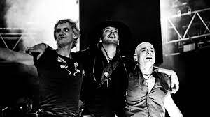

Amor Stereo
Soda Stereo es una banda del Rock alternativo formada en Buenos Aires, Argentina en 1982 por Gustavo Cerati (voz y guitarra), Zeta Bosio (bajo) y Charly Alberti (batería),considerada ampliamente por la crítica especializada como la banda más importante, popular e influyente de rock en español de todos los tiempos
